A Community is a Garden The Guggenheim Museum
A Community is a Garden is a toolkit for artistic practice towards grassroots change. Filled with interviews, exercises, and prompts for reflection, the book is an accessible resource for artists, communities, and institutions looking to build and strengthen long-term partnerships.
This book was developed over the course of the inaugural Summer Research Practicum at the Guggenheim Museum. You can read, print, and share it for free at bit.ly/CommunityGardenToolkit.
A collective effort with Kanyinsola Anifowoshe, Jordan Weber, Ila N. Sheren, Brian Harnetty, Cheryl Blosser, Efe Igor, Bird Closet, Center for Genomic Gastronomy, Rob Gee, Alicia Gee, Syd Gee, Preston Thompson, and Jackiie Popjes.
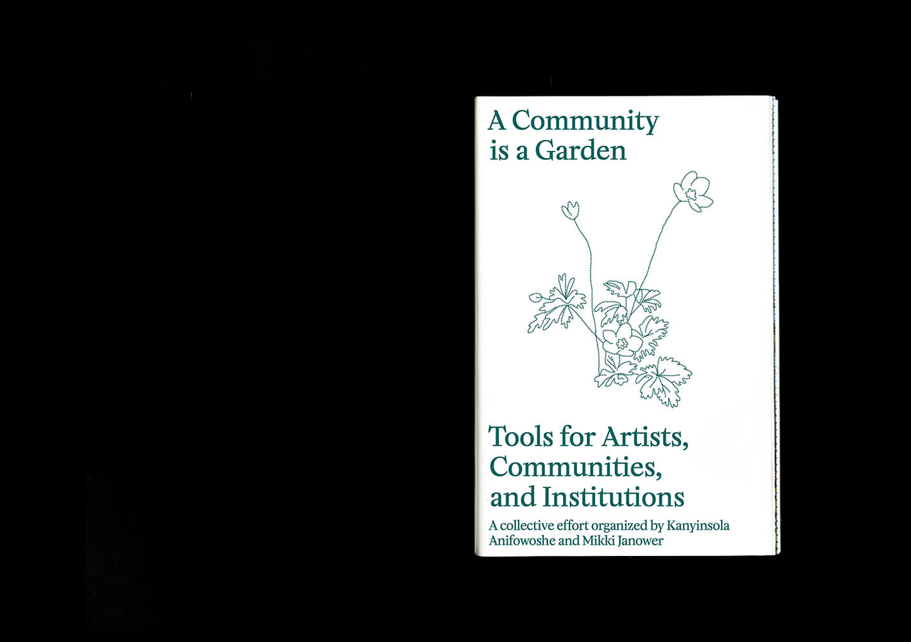
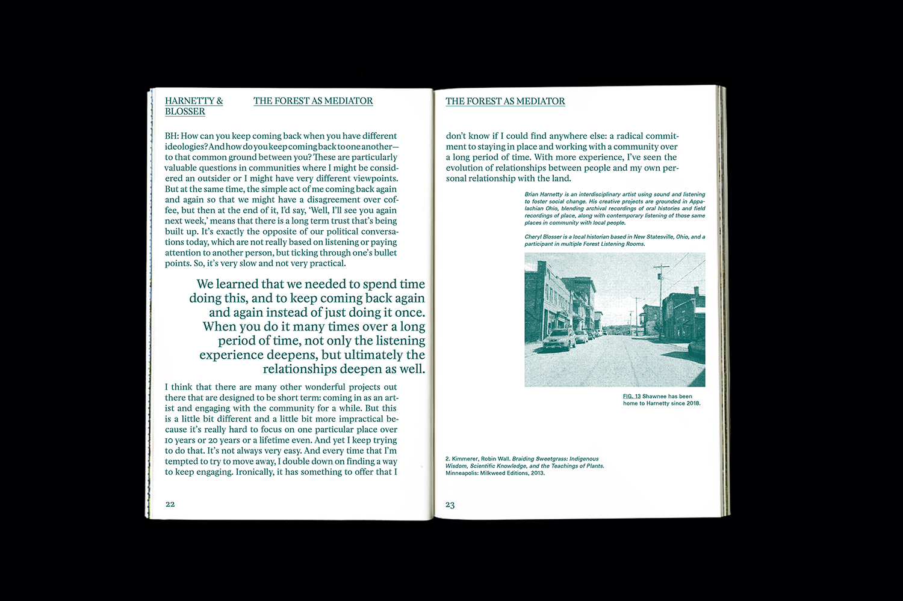
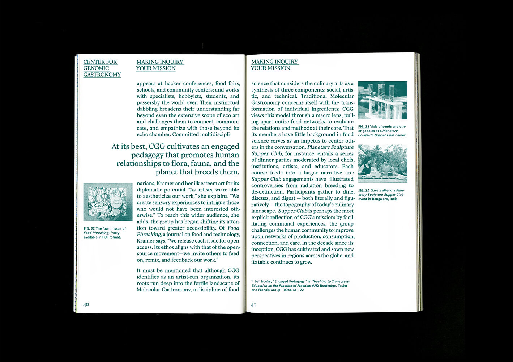

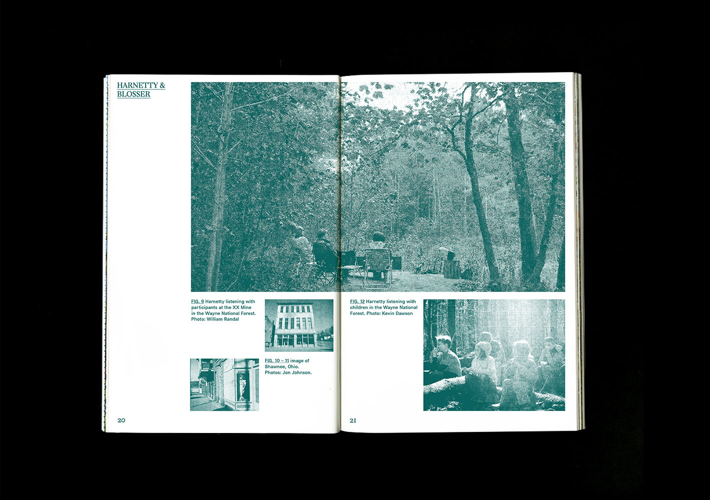
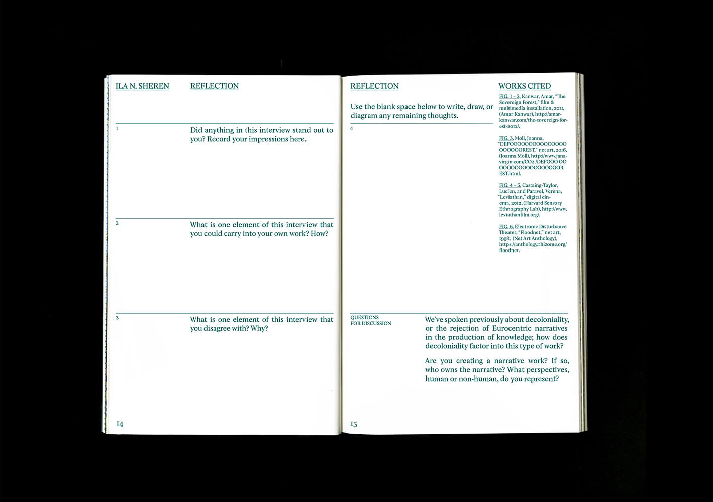
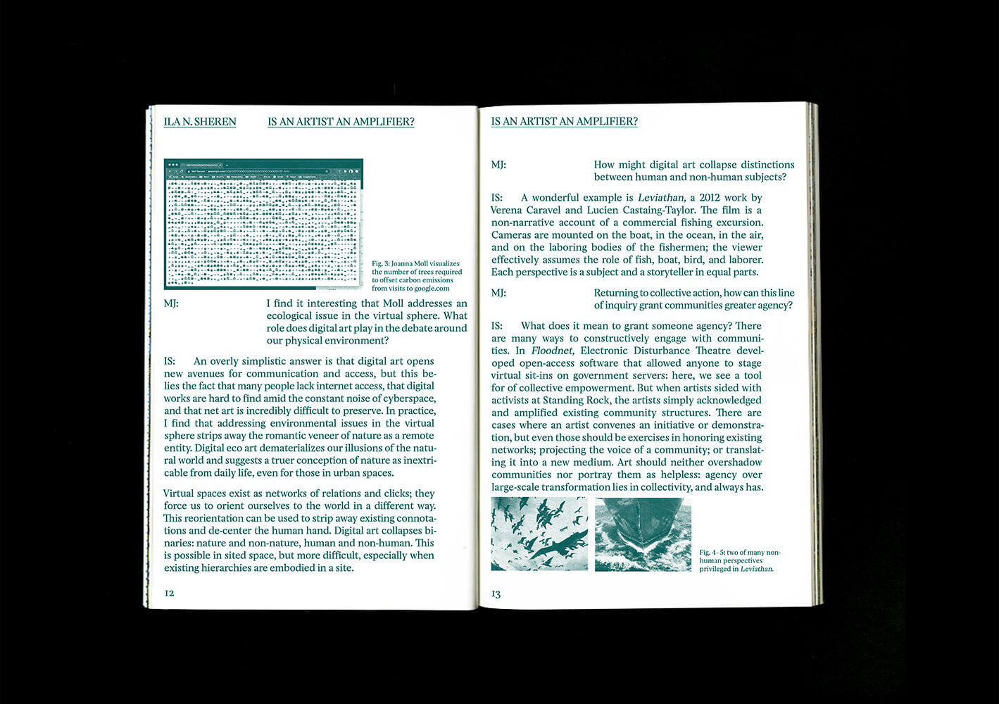
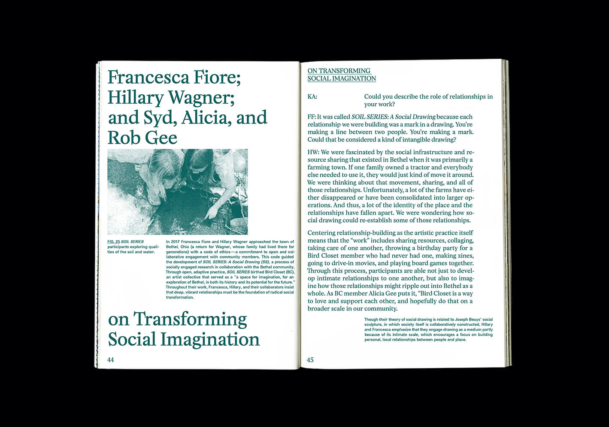
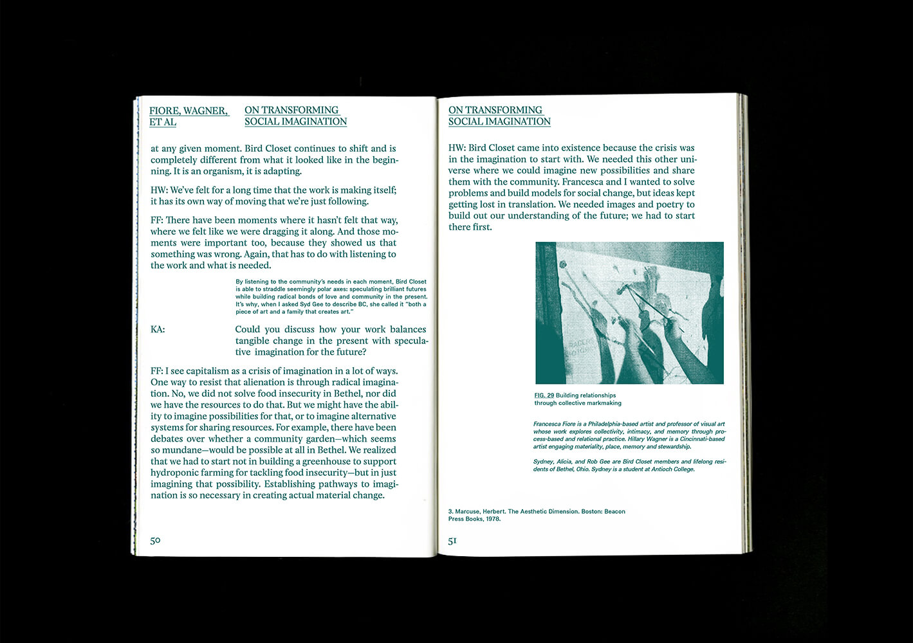
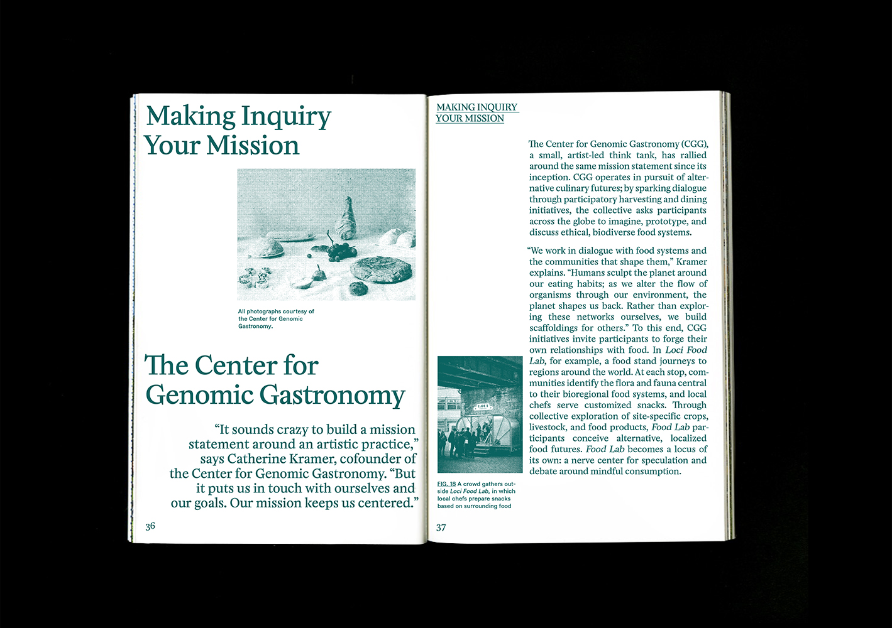
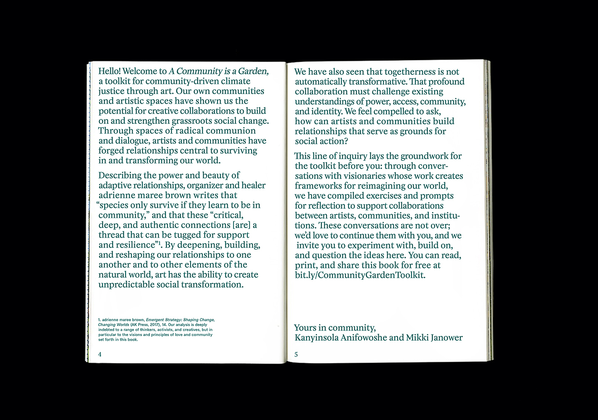
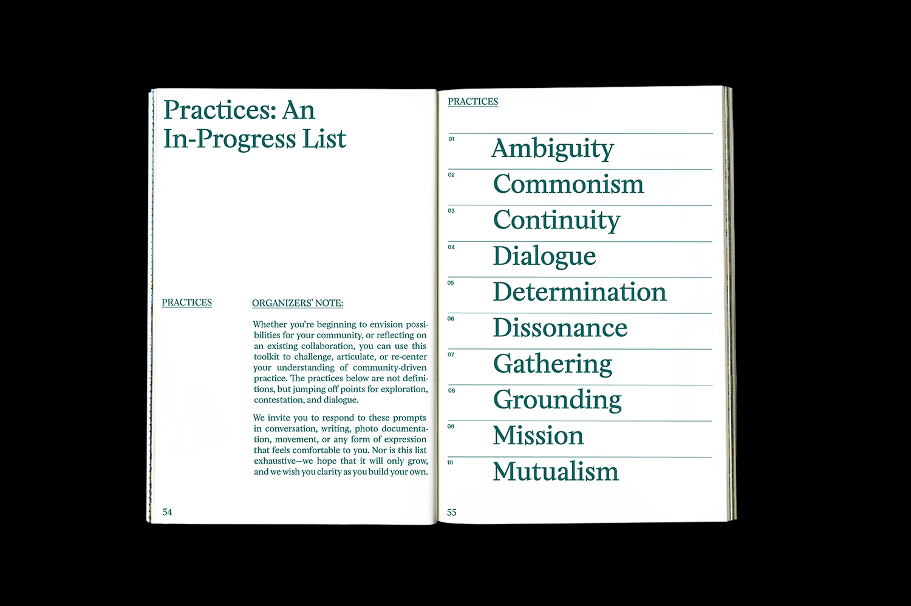

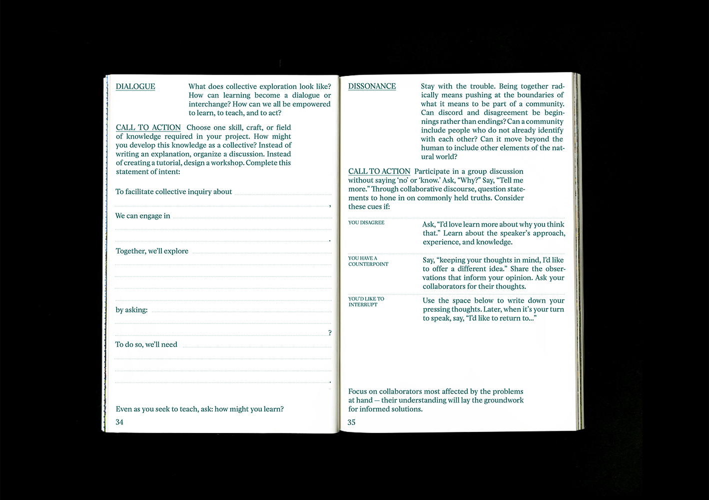
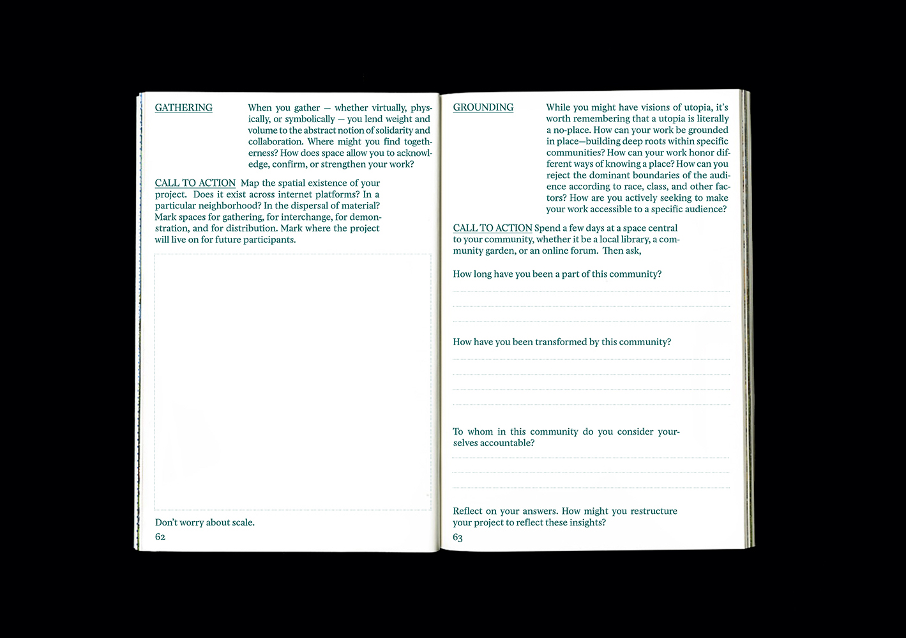
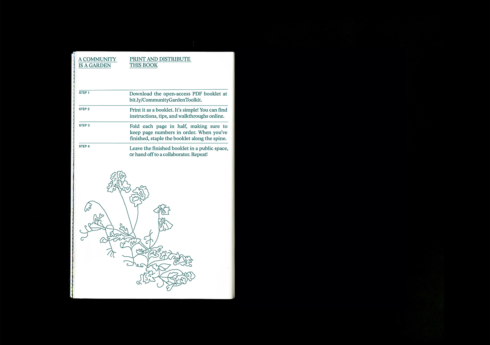